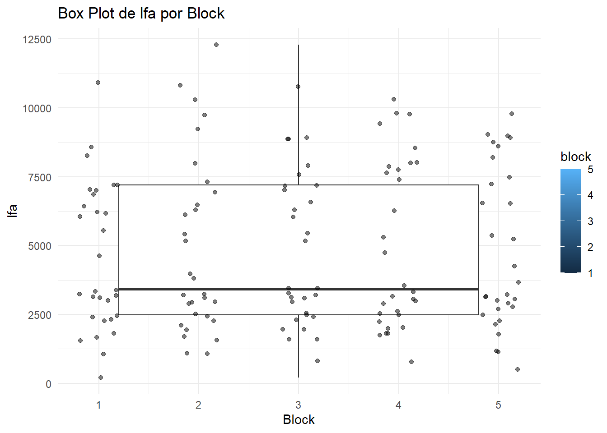
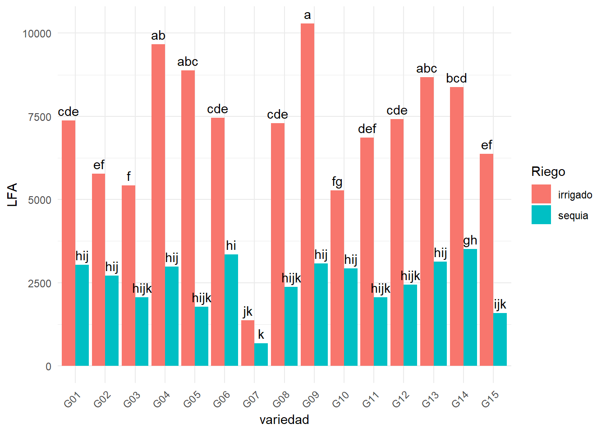
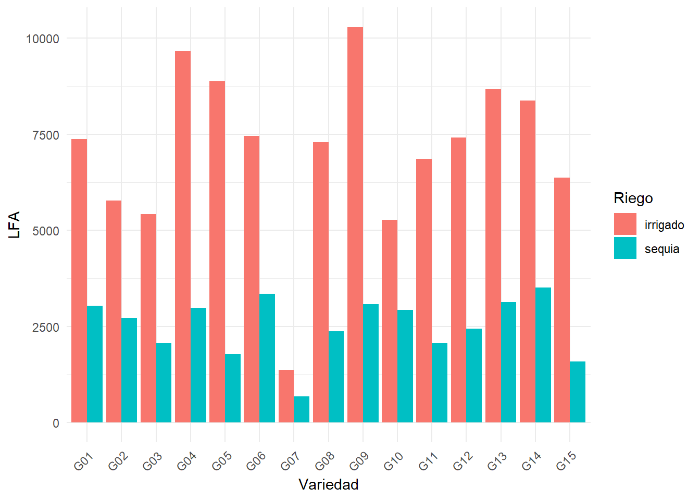

1 + 1[1] 2Quarto enables you to weave together content and executable code into a finished document. To learn more about Quarto see https://quarto.org.
When you click the Render button a document will be generated that includes both content and the output of embedded code. You can embed code like this:
1 + 1[1] 2You can add options to executable code like this
[1] 4The echo: false option disables the printing of code (only output is displayed).
#FB
library(readxl)
data <- read_excel("eficiencia de riego papa.xlsx")
head(data)# A tibble: 6 × 18
riego geno block bloque spad_29 spad_83 rwc_84 op_84 leafdw stemdw rootdw
<chr> <chr> <dbl> <chr> <dbl> <dbl> <dbl> <dbl> <dbl> <dbl> <dbl>
1 sequia G01 2 II 56.3 41.1 61.5 -2.43 13.3 14.9 3.83
2 sequia G02 4 IV 52.7 47.9 63.2 -3.03 9.42 8.63 2.1
3 irrigado G01 3 III 49.2 41.6 67.7 -2.5 18.2 24.2 3.16
4 sequia G02 1 I 55.5 44.2 64.9 -2.4 8.84 6.58 2
5 irrigado G03 2 II 58.2 32.6 74.5 -2.27 14.6 12.6 1.83
6 irrigado G04 5 V 43.5 37.8 74.0 -2.37 19.8 17.5 2.83
# ℹ 7 more variables: tubdw <dbl>, biomdw <dbl>, hi <dbl>, ttrans <dbl>,
# wue <dbl>, twue <dbl>, lfa <dbl>modelo <- lm(formula = lfa ~ block + geno + riego + riego*geno, data = data)
anova(modelo)Analysis of Variance Table
Response: lfa
Df Sum Sq Mean Sq F value Pr(>F)
block 1 1148369 1148369 2.068 0.153
geno 14 261742780 18695913 33.668 <2e-16 ***
riego 1 788562704 788562704 1420.068 <2e-16 ***
geno:riego 14 108153220 7725230 13.912 <2e-16 ***
Residuals 119 66080618 555299
---
Signif. codes: 0 '***' 0.001 '**' 0.01 '*' 0.05 '.' 0.1 ' ' 1 install.packages("ggplot2", repos = "https://cloud.r-project.org/")Installing package into 'C:/Users/Usuario/AppData/Local/R/win-library/4.4'
(as 'lib' is unspecified)package 'ggplot2' successfully unpacked and MD5 sums checked
The downloaded binary packages are in
C:\Users\Usuario\AppData\Local\Temp\RtmpeYyU9Q\downloaded_packageslibrary (ggplot2)
ggplot(data, aes(x = block, y = lfa, fill = block)) +
geom_boxplot(outlier.colour = "red", outlier.shape = 16, outlier.size = 2) + # Personaliza los outliers
geom_jitter(width = 0.2, alpha = 0.5) + # Añade puntos de datos con un poco de dispersión
labs(title = "Box Plot de lfa por Block", x = "Block", y = "lfa") +
theme_minimal()Warning: Continuous x aesthetic
ℹ did you forget `aes(group = ...)`?Warning: The following aesthetics were dropped during statistical transformation: fill.
ℹ This can happen when ggplot fails to infer the correct grouping structure in
the data.
ℹ Did you forget to specify a `group` aesthetic or to convert a numerical
variable into a factor?
#Grafico
options(repos = c(CRAN = "https://cloud.r-project.org/"))
install.packages("agricolae")Installing package into 'C:/Users/Usuario/AppData/Local/R/win-library/4.4'
(as 'lib' is unspecified)package 'agricolae' successfully unpacked and MD5 sums checked
The downloaded binary packages are in
C:\Users\Usuario\AppData\Local\Temp\RtmpeYyU9Q\downloaded_packageslibrary(agricolae)
# test de Tukey para el factor de riego
tukey_riego <- HSD.test(modelo,"riego", group = TRUE)
print (tukey_riego)$statistics
MSerror Df Mean CV MSD
555299.3 119 4806.727 15.50294 240.9545
$parameters
test name.t ntr StudentizedRange alpha
Tukey riego 2 2.800284 0.05
$means
lfa std r se Min Max Q25 Q50 Q75
irrigado 7099.560 2303.632 75 86.04645 1065 12296 6080.5 7194 8677
sequia 2513.893 774.837 75 86.04645 216 3812 1994.0 2551 3128
$comparison
NULL
$groups
lfa groups
irrigado 7099.560 a
sequia 2513.893 b
attr(,"class")
[1] "group"# Test de Tukey para el factor geno
tukey_geno <- HSD.test(modelo, "geno", group = TRUE)
print(tukey_geno)$statistics
MSerror Df Mean CV MSD
555299.3 119 4806.727 15.50294 1154.38
$parameters
test name.t ntr StudentizedRange alpha
Tukey geno 15 4.898749 0.05
$means
lfa std r se Min Max Q25 Q50 Q75
G01 5208.9 2320.5919 10 235.6479 2900 7983 3025.00 4872.0 7443.75
G02 4248.3 1790.3774 10 235.6479 2450 7392 2705.75 3847.0 5216.25
G03 3738.1 1774.7585 10 235.6479 1812 5546 2118.00 3790.0 5402.25
G04 6323.9 3587.6947 10 235.6479 2511 10812 3062.25 5916.5 9560.00
G05 5331.2 3829.9748 10 235.6479 1658 10291 1784.25 4586.5 8732.25
G06 5401.8 2269.5298 10 235.6479 3160 9040 3399.00 5063.5 6918.50
G07 1027.3 508.7265 10 235.6479 216 1989 789.25 1067.0 1129.50
G08 4830.4 2602.1733 10 235.6479 2021 7644 2377.75 4848.0 7235.75
G09 6680.5 3942.2942 10 235.6479 2781 12296 3171.25 5886.0 10305.00
G10 4097.9 1361.9161 10 235.6479 2541 6164 2979.75 3692.5 5064.00
G11 4458.5 2830.3554 10 235.6479 1556 8867 2247.00 3133.5 6971.25
G12 4931.8 2694.8761 10 235.6479 2400 8604 2449.25 4299.5 7186.50
G13 5899.2 3000.7529 10 235.6479 3062 9744 3126.50 5186.5 8626.75
G14 5949.3 2751.8761 10 235.6479 3318 9776 3503.75 4931.0 8708.00
G15 3973.8 2529.1069 10 235.6479 1177 6522 1638.25 4042.5 6304.50
$comparison
NULL
$groups
lfa groups
G09 6680.5 a
G04 6323.9 ab
G14 5949.3 abc
G13 5899.2 abc
G06 5401.8 bcd
G05 5331.2 bcd
G01 5208.9 bcde
G12 4931.8 cdef
G08 4830.4 cdefg
G11 4458.5 defg
G02 4248.3 defg
G10 4097.9 efg
G15 3973.8 fg
G03 3738.1 g
G07 1027.3 h
attr(,"class")
[1] "group"# Test de Tukey para la interacción riego:geno
tukey_interaccion <- HSD.test(modelo,c("riego", "geno"), group = TRUE)
print(tukey_interaccion)$statistics
MSerror Df Mean CV MSD
555299.3 119 4806.727 15.50294 1811.154
$parameters
test name.t ntr StudentizedRange alpha
Tukey riego:geno 30 5.434716 0.05
$means
lfa std r se Min Max Q25 Q50 Q75
irrigado:G01 7378.0 583.66386 5 333.2565 6540 7983 7038 7579 7750
irrigado:G02 5779.6 1127.46987 5 333.2565 4631 7392 5163 5234 6478
irrigado:G03 5417.0 89.82761 5 333.2565 5306 5546 5370 5413 5450
irrigado:G04 9669.0 946.08483 5 333.2565 8569 10812 8867 9791 10306
irrigado:G05 8878.8 1235.49330 5 333.2565 7206 10291 8190 8913 9794
irrigado:G06 7455.4 1009.23848 5 333.2565 6577 9040 6857 6939 7864
irrigado:G07 1374.0 411.02798 5 333.2565 1065 1989 1069 1140 1607
irrigado:G08 7287.0 282.87100 5 333.2565 6998 7644 7013 7310 7470
irrigado:G09 10287.8 1548.55084 5 333.2565 8534 12296 8925 10765 10919
irrigado:G10 5271.2 822.38689 5 333.2565 4249 6164 4743 5171 6029
irrigado:G11 6854.8 1888.92766 5 333.2565 3966 8867 6210 7225 8006
irrigado:G12 7417.2 946.51450 5 333.2565 6111 8604 7164 7194 8013
irrigado:G13 8672.4 1015.52169 5 333.2565 7181 9744 8257 8750 9430
irrigado:G14 8384.2 1473.00160 5 333.2565 6050 9776 7895 8979 9221
irrigado:G15 6367.0 107.23572 5 333.2565 6270 6522 6303 6305 6435
sequia:G01 3039.8 115.88874 5 333.2565 2900 3204 2995 3000 3100
sequia:G02 2717.0 280.85138 5 333.2565 2450 3063 2487 2619 2966
sequia:G03 2059.2 179.29083 5 333.2565 1812 2274 1954 2108 2148
sequia:G04 2978.8 302.79151 5 333.2565 2511 3264 2890 3010 3219
sequia:G05 1783.6 120.34658 5 333.2565 1658 1967 1700 1772 1821
sequia:G06 3348.2 165.76248 5 333.2565 3160 3550 3199 3382 3450
sequia:G07 680.6 335.94613 5 333.2565 216 1098 496 782 811
sequia:G08 2373.8 261.17753 5 333.2565 2021 2698 2279 2320 2551
sequia:G09 3073.2 198.10528 5 333.2565 2781 3238 2962 3150 3235
sequia:G10 2924.6 235.44065 5 333.2565 2541 3136 2909 2941 3096
sequia:G11 2062.2 317.59912 5 333.2565 1556 2301 1942 2238 2274
sequia:G12 2446.4 37.16584 5 333.2565 2400 2488 2425 2439 2480
sequia:G13 3126.0 47.81213 5 333.2565 3062 3192 3110 3120 3146
sequia:G14 3514.4 217.41964 5 333.2565 3318 3812 3327 3450 3665
sequia:G15 1580.6 248.68313 5 333.2565 1177 1815 1560 1601 1750
$comparison
NULL
$groups
lfa groups
irrigado:G09 10287.8 a
irrigado:G04 9669.0 ab
irrigado:G05 8878.8 abc
irrigado:G13 8672.4 abc
irrigado:G14 8384.2 bcd
irrigado:G06 7455.4 cde
irrigado:G12 7417.2 cde
irrigado:G01 7378.0 cde
irrigado:G08 7287.0 cde
irrigado:G11 6854.8 def
irrigado:G15 6367.0 ef
irrigado:G02 5779.6 ef
irrigado:G03 5417.0 f
irrigado:G10 5271.2 fg
sequia:G14 3514.4 gh
sequia:G06 3348.2 hi
sequia:G13 3126.0 hij
sequia:G09 3073.2 hij
sequia:G01 3039.8 hij
sequia:G04 2978.8 hij
sequia:G10 2924.6 hij
sequia:G02 2717.0 hij
sequia:G12 2446.4 hijk
sequia:G08 2373.8 hijk
sequia:G11 2062.2 hijk
sequia:G03 2059.2 hijk
sequia:G05 1783.6 hijk
sequia:G15 1580.6 ijk
irrigado:G07 1374.0 jk
sequia:G07 680.6 k
attr(,"class")
[1] "group"str(tukey_interaccion)List of 5
$ statistics:'data.frame': 1 obs. of 5 variables:
..$ MSerror: num 555299
..$ Df : int 119
..$ Mean : num 4807
..$ CV : num 15.5
..$ MSD : num 1811
$ parameters:'data.frame': 1 obs. of 5 variables:
..$ test : chr "Tukey"
..$ name.t : chr "riego:geno"
..$ ntr : int 30
..$ StudentizedRange: num 5.43
..$ alpha : num 0.05
$ means :'data.frame': 30 obs. of 9 variables:
..$ lfa: num [1:30] 7378 5780 5417 9669 8879 ...
..$ std: num [1:30] 583.7 1127.5 89.8 946.1 1235.5 ...
..$ r : int [1:30] 5 5 5 5 5 5 5 5 5 5 ...
..$ se : num [1:30] 333 333 333 333 333 ...
..$ Min: num [1:30] 6540 4631 5306 8569 7206 ...
..$ Max: num [1:30] 7983 7392 5546 10812 10291 ...
..$ Q25: num [1:30] 7038 5163 5370 8867 8190 ...
..$ Q50: num [1:30] 7579 5234 5413 9791 8913 ...
..$ Q75: num [1:30] 7750 6478 5450 10306 9794 ...
$ comparison: NULL
$ groups :'data.frame': 30 obs. of 2 variables:
..$ lfa : num [1:30] 10288 9669 8879 8672 8384 ...
..$ groups: chr [1:30] "a" "ab" "abc" "abc" ...
- attr(*, "class")= chr "group"library(tidyverse)── Attaching core tidyverse packages ──────────────────────── tidyverse 2.0.0 ──
✔ dplyr 1.1.4 ✔ readr 2.1.5
✔ forcats 1.0.0 ✔ stringr 1.5.1
✔ lubridate 1.9.3 ✔ tibble 3.2.1
✔ purrr 1.0.2 ✔ tidyr 1.3.1
── Conflicts ────────────────────────────────────────── tidyverse_conflicts() ──
✖ dplyr::filter() masks stats::filter()
✖ dplyr::lag() masks stats::lag()
ℹ Use the conflicted package (<http://conflicted.r-lib.org/>) to force all conflicts to become errorslibrary(dplyr)
library(tidyr)
library(purrr)
library(stringr)mc <- tukey_interaccion$groups%>%
rownames_to_column("tr at")%>%
separate(`tr at`, c("riego", "geno"))
str(mc)'data.frame': 30 obs. of 4 variables:
$ riego : chr "irrigado" "irrigado" "irrigado" "irrigado" ...
$ geno : chr "G09" "G04" "G05" "G13" ...
$ lfa : num 10288 9669 8879 8672 8384 ...
$ groups: chr "a" "ab" "abc" "abc" ...ggplot(mc, aes(x = geno, y = lfa, fill = riego)) +
geom_bar(stat = "identity", position = position_dodge()) +
geom_text(aes(label = groups), position = position_dodge(0.9), vjust = -0.5) +
labs(x = "variedad", y = "LFA", fill = "Riego") +
theme_minimal() +
theme(axis.text.x = element_text(angle = 45, hjust = 1))
library(emmeans)Welcome to emmeans.
Caution: You lose important information if you filter this package's results.
See '? untidy'mc <- emmeans(modelo, ~ riego * geno)
mc <- emmeans(modelo, ~ riego | geno)
mc <- emmeans(modelo, ~ geno | riego) %>%
as.data.frame()
mcriego = irrigado:
geno emmean SE df lower.CL upper.CL
G01 7378.0 333.2565 119 6718.119 8037.881
G02 5779.6 333.2565 119 5119.719 6439.481
G03 5417.0 333.2565 119 4757.119 6076.881
G04 9669.0 333.2565 119 9009.119 10328.881
G05 8878.8 333.2565 119 8218.919 9538.681
G06 7455.4 333.2565 119 6795.519 8115.281
G07 1374.0 333.2565 119 714.119 2033.881
G08 7287.0 333.2565 119 6627.119 7946.881
G09 10287.8 333.2565 119 9627.919 10947.681
G10 5271.2 333.2565 119 4611.319 5931.081
G11 6854.8 333.2565 119 6194.919 7514.681
G12 7417.2 333.2565 119 6757.319 8077.081
G13 8672.4 333.2565 119 8012.519 9332.281
G14 8384.2 333.2565 119 7724.319 9044.081
G15 6367.0 333.2565 119 5707.119 7026.881
riego = sequia:
geno emmean SE df lower.CL upper.CL
G01 3039.8 333.2565 119 2379.919 3699.681
G02 2717.0 333.2565 119 2057.119 3376.881
G03 2059.2 333.2565 119 1399.319 2719.081
G04 2978.8 333.2565 119 2318.919 3638.681
G05 1783.6 333.2565 119 1123.719 2443.481
G06 3348.2 333.2565 119 2688.319 4008.081
G07 680.6 333.2565 119 20.719 1340.481
G08 2373.8 333.2565 119 1713.919 3033.681
G09 3073.2 333.2565 119 2413.319 3733.081
G10 2924.6 333.2565 119 2264.719 3584.481
G11 2062.2 333.2565 119 1402.319 2722.081
G12 2446.4 333.2565 119 1786.519 3106.281
G13 3126.0 333.2565 119 2466.119 3785.881
G14 3514.4 333.2565 119 2854.519 4174.281
G15 1580.6 333.2565 119 920.719 2240.481
Confidence level used: 0.95 ggplot(mc, aes(x = geno, y = emmean, fill = riego)) +
geom_bar(stat = "identity", position = position_dodge()) +
labs(x = "Variedad", y = "LFA", fill = "Riego") +
theme_minimal() +
theme(axis.text.x = element_text(angle = 45, hjust = 1))